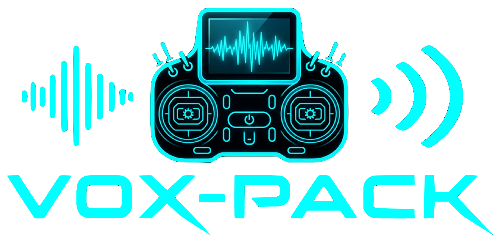

Vox-Pack
Give your radio a voice.
Vox-Pack creates the voice files your EdgeTX radio speaks during flight: “Motor armed”, “Gear down”, “Timer started”… You choose the voice, you type the phrases, and the app creates WAV files ready for the SD card.
30 voices
11 French and 19 English voices, including EdgeTX's official ones: Denise (★) and Emily (★).
EdgeTX system sounds
The 186 SYSTEM announcements in French (212 in English), with the
chosen voice, in a SYSTEM/ folder ready for the SD card.
Robot voices
Four Robot 1 to 4 dots to transform the chosen voice — just for fun. None lit: the normal voice.
EdgeTX format
16-bit, 32 kHz, mono WAV files — exactly what the radio expects.
An Internet connection is required to create the voices (the Microsoft Edge service). The generated files stay on your SD card and work offline. The app is available in French and English.
Open source on GitHub · MIT licence · macOS and Windows.